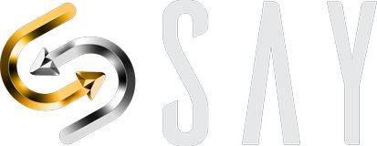
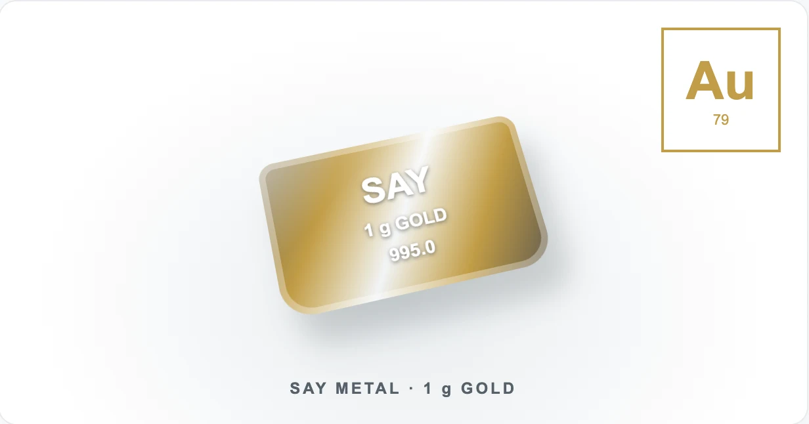
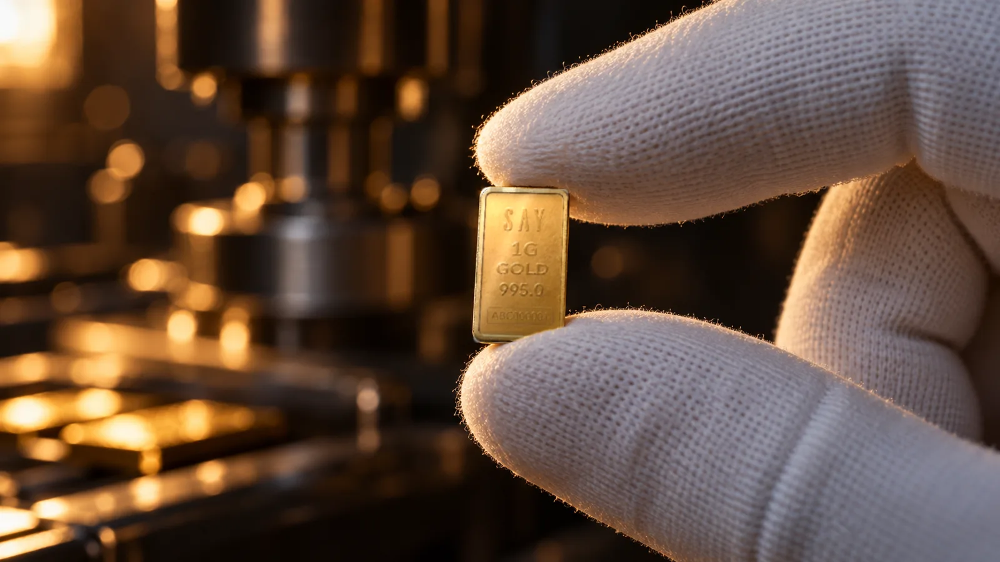

Altın

- Atom noAtomic no.
- 79
- Atom kütlesiAtomic mass
- u
- Grup · PeriyotGroup · Period

SAY GRAM
SAY GRAM, ambalajındaki NFC etiketiyle orijinalliği akıllı telefondan doğrulanabilen külçe altındır.SAY GRAM is bullion gold whose authenticity can be verified from a smartphone through the NFC tag in its packaging.